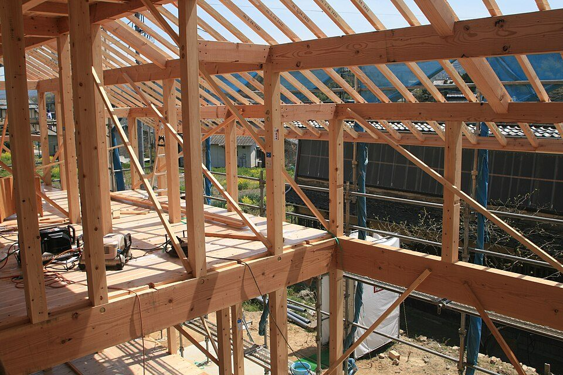
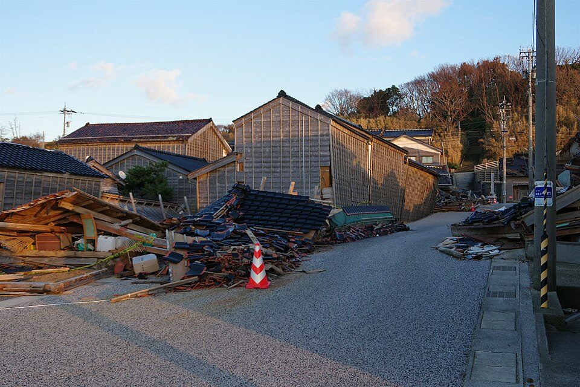

中古住宅の耐震性能の調べ方：建てた時期、書類、耐震診断、補助と税の制度（2026年版）
要点まとめ
中古住宅は、新築より安く買える一方で、建てた時期によって耐震性能に大きな差があります。この記事では、中古の一戸建てやマンションの耐震性能を、買う前にどう調べるかを、国土交通省・国税庁・自治体の資料でまとめました。住宅を買うときの全体の流れは、家を買うときに考えることにまとめています。

まず「いつの基準で建てたか」を知る
| 時期 | 変わったこと |
|---|---|
| 1981年6月 | 新耐震基準。木造は必要な壁の量が強化され、旧耐震の約1.4倍の壁量になった[1] |
| 2000年6月 | 木造の接合部の仕様などが明確になった（現行の規定）[1] |
| 2025年4月 | 木造2階建てなども、建築確認で構造の審査が必要になった[7] |
熊本地震では、建てた時期で倒壊率に大きな差
1981年5月以前の木造は28.2%、2000年6月以降は2.2%
国土交通省の委員会は、2016年の熊本地震で被害の大きかった益城町中心部の木造建築物を、建てた時期ごとに分析しました[1]。倒壊したのは、1981年5月以前の旧耐震基準のもので28.2%（759棟のうち214棟）でした[1]。住宅性能表示制度の耐震等級3の住宅は、大部分が無被害でした[1]。

「いつ」の日付で判断するかは、制度ごとに書き方が違う
着工の日、新築の日、建築の日など、制度ごとに書き方が違う
宅地建物取引業法の重要事項説明の様式は「昭和56年5月31日以前に新築の工事に着手した住宅」、地震保険の建築年割引は「昭和56年6月1日以降に新築された建物」、住宅ローン減税は「昭和57年1月1日以後に建築されたもの」と書いています[2][10][6]。1981年前後の家は、築年数だけで決めつけず、建築確認と着工・完成の日付を書類で確かめるのが安全です（筆者の見解）。
書類で確かめる
| 書類 | わかること |
|---|---|
| 確認済証・検査済証 | 建築確認を受けたこと、完成後の検査に合格したこと。検査済証は、建築基準法令に適合していることを示す書類[2] |
| 台帳記載事項証明書 | 建築確認の記録。横浜市では1枚300円[11] |
| 耐震基準適合証明書・耐震診断の結果報告書 | 新耐震基準に適合していることを示す書類[2] |
| 建物状況調査（インスペクション）の報告書 | 基礎や外壁のひび割れ、雨漏りなどの劣化の状況[2] |
重要事項説明で、書類の保存の状況を聞ける
2018年4月から、書類の保存の状況を説明することになった
2018年4月から、中古住宅の売買の重要事項説明で、確認済証・検査済証・新耐震基準への適合を証明する書類などが保存されているかを説明することになりました[2]。ただし、2025年3月以前の木造2階建てなどは、建築士が設計した場合、建築確認で構造の審査が省略されていました[7]。確認済証があるだけでは、耐震性まではわからない場合があります（筆者の見解）。
専門家に調べてもらう
インスペクションは劣化の調査で、耐震診断ではない
インスペクションは、瑕疵の有無を保証するものではない
建物状況調査（インスペクション）は、講習を修了した建築士が、基礎や外壁のひび割れ・雨漏りなどの劣化を目視や計測で調べるものです[2]。劣化の有無を判定する調査で、瑕疵があるかどうかを判定したり、瑕疵がないことを保証したりするものではありません[2]。耐震性を数値で知るには、耐震診断を受けます（筆者の見解）。
耐震診断の結果は、評点1.0が目安
木造は評点1.0以上なら、倒壊の危険性が低い
| 構造 | 倒壊の危険性が低い | 危険性が高い |
|---|---|---|
| 木造（評点Iw） | 1.0以上 | 0.7未満 |
| 鉄筋コンクリート造など（Is値・q値） | Is0.6以上かつq1.0以上 | Is0.3未満またはq0.5未満 |
出典: [3]。その間の値は「倒壊の危険性がある」とされます[3]。自分でできる入り口として、国土交通省住宅局の監修で日本建築防災協会がまとめた「誰でもできるわが家の耐震診断」があります[12]。
費用と補助
耐震改修のモデルケースは約224万円
築50年・2階建て・約100㎡の木造で約224万円
国土交通省の特設サイトは、築50年・2階建て・延べ約100㎡の木造住宅を改修すると、224万円ほどかかるというモデルケースを紹介しています[13]。国は自治体を通じて補助していて、戸建ての耐震改修には国と地方を合わせて定額115万円（密集市街地・多雪区域以外の区域）を補助する仕組みがあります[14][15]。補助を受けるには、自治体に補助制度があることが前提です[15]。
| 自治体 | 耐震診断 | 耐震改修工事の上限 |
|---|---|---|
| 横浜市 | 2000年5月31日以前に建築確認を得て着工した木造に、無料で診断士を派遣[4] | 一般世帯115万円、非課税世帯155万円[16] |
| 神戸市 | 1981年5月以前の住宅と、2000年5月以前に着工した木造2階建て以下などを無料で診断[5] | 費用の4/5または115万円の低い方[5] |
| 大阪市 | 2000年5月31日以前に建てた住宅の診断費の10/11を補助（1戸5万円まで）[17] | 費用の1/2で、1戸115万円まで[17] |
東京都では、区市町村ごとに助成制度があり、1981年6月から2000年5月に着工した木造2階建て以下も対象になりました[18]。補助の多くは契約や工事の前に申請が必要なので、買う前に自治体に問い合わせておくと安心です（筆者の見解）。
マンションは、管理組合の耐震診断を確かめる
大阪市のマンション補助は、1981年5月以前の建築確認が条件
大阪市のマンションの耐震診断・改修の補助は、1981年5月31日以前に建築確認を受けて建てられ、検査済証の交付を受けた建物が対象です[19]。マンションの耐震性は建物全体で決まるので、管理組合が耐震診断をしたか、その結果がどうだったかを確かめることになります（筆者の見解）。
買うときの制度
住宅ローン減税は、1982年以後の建築か、証明書が必要
1981年以前の家は、2年以内の耐震基準適合証明書などで証明する
中古住宅の住宅ローン減税は、1982年1月1日以後に建築された家が対象です[6]。それより前の家は、取得の日前2年以内に調査を終えた耐震基準適合証明書、建設住宅性能評価書（耐震等級1〜3）、既存住宅売買瑕疵保険の付保証明書のどれかで、耐震基準への適合を証明します[6]。
地震保険は、耐震等級などで割り引かれる
耐震等級3なら50%、1981年6月以降の新築なら10%の割引
| 割引 | 条件 | 割引率 |
|---|---|---|
| 耐震等級割引 | 耐震等級3／2／1 | 50%／30%／10% |
| 耐震診断割引 | 自治体などの耐震診断・改修で、1981年6月施行の耐震基準を満たす | 10% |
| 建築年割引 | 1981年6月1日以降に新築された建物 | 10% |
出典: [10]。
耐震改修をすると、税が軽くなる
翌年度の固定資産税が1/2に。所得税の控除は最大62.5万円
旧耐震の住宅を現行の耐震基準に合わせる改修をすると、所得税の控除（最大62.5万円）と、翌年度分の固定資産税の1/2の減額を受けられます[21]。耐震改修に限っては、住宅ローン減税と併用できます[21]。
買う前から入居後までの流れ
- 物件を探す
築年と、土地の災害リスクを見る
国土地理院の「重ねるハザードマップ」で、洪水・土砂災害などのリスクを地図に重ねて見られる[22]
- 申し込みの前
確認済証・検査済証・耐震診断書があるか聞く
建築確認の日付は、自治体で台帳記載事項証明書を取って確かめられる[11]
- 契約の前
インスペクションや耐震診断、補助の対象かを決める
住宅ローン減税の証明書は、取得の日前2年以内の調査が必要[6]
- 重要事項説明
調査の結果と、書類の保存の状況の説明を受ける
- 入居の後
地震保険の割引に使う書類を保管し、確定申告をする
（筆者の整理）
住宅の約1割は、まだ耐震性が足りない
耐震性が不十分な住宅は、全国で約570万戸
国土交通省の推計では、2023年の住宅の総数約5,570万戸のうち、耐震性が不十分な住宅が約570万戸あります[23]。戸建ての耐震化率は約85%で、耐震性が不十分なものは約450万戸です[23]。国は、2035年（令和17年）までに耐震性が不十分な住宅をおおむね解消する目標を掲げています[24]。
今回確認できなかった点
- 「建築確認の日で判断する」と明記した公的な資料（制度ごとに書き方が違った）
- 登記事項証明書の新築年月日の見方についての法務局の説明
- インスペクションと既存住宅の性能評価の費用の公的な目安
- 台帳記載事項証明書の、横浜市以外の手数料
- 地震保険の割引を受けるときに出す書類の種類
関連する記事
出典（24件）
閲覧日はいずれも2026年11月10日
- 「熊本地震における建築物被害の原因分析を行う委員会」報告書のポイント（国土交通省 住宅局）
- 改正宅地建物取引業法の施行について（建物状況調査など）（国土交通省）
- 建築物の耐震診断及び耐震改修の促進を図るための基本的な方針（平成18年国土交通省告示第184号）（国土交通省）
- 木造住宅の無料耐震診断（横浜市）
- 2026年度 神戸市住宅耐震化促進事業補助金申請の手引き（神戸市）
- No.1211-3 中古住宅を取得し、令和4年以降に居住の用に供した場合（住宅借入金等特別控除）（国税庁）
- 建築確認・検査の対象となる建築物の規模等の見直し（国土交通省）
- 新耐震基準の木造住宅の耐震性能検証法の公表について（2017年5月16日）（国土交通省）
- 新耐震基準の木造住宅の耐震性能検証法について（概要）（国土交通省）
- 地震保険制度の概要（財務省）
- 建築確認申請台帳記載事項証明書の電子申請（手順書）（横浜市）
- 誰でもできるわが家の耐震診断（日本建築防災協会（監修 国土交通省住宅局））
- 耐震改修の特設サイト「家族を思う、強い家」（国土交通省）
- 住宅・建築物の耐震改修の支援策（令和8年度）（国土交通省）
- 住宅・建築物耐震改修事業（住宅・建築物安全ストック形成事業）令和8年度当初予算（国土交通省）
- 木造住宅耐震改修促進事業（横浜市）
- 民間戸建住宅等の耐震診断・改修等補助制度（大阪市）
- 新耐震基準木造住宅の耐震化支援（東京都（東京都耐震ポータルサイト））
- 民間マンションの耐震診断・耐震改修補助制度（大阪市）
- 既存住宅売買のかし保険（住宅瑕疵担保責任保険協会）
- 住宅リフォームの減税制度（所得税・固定資産税）（国土交通省）
- ハザードマップポータルサイト（国土交通省・国土地理院）
- 住宅の耐震化率（全国）（令和5年）（国土交通省）
- 住宅・建築物の耐震化について（国土交通省）
写真・画像の出典（2件）
- 木造住宅の骨組み
写真: メルビル／Wikimedia Commons（CC BY 3.0） - 能登半島地震で倒壊した旧角海家住宅
写真: Hurohukidaikon／Wikimedia Commons（CC BY 4.0）